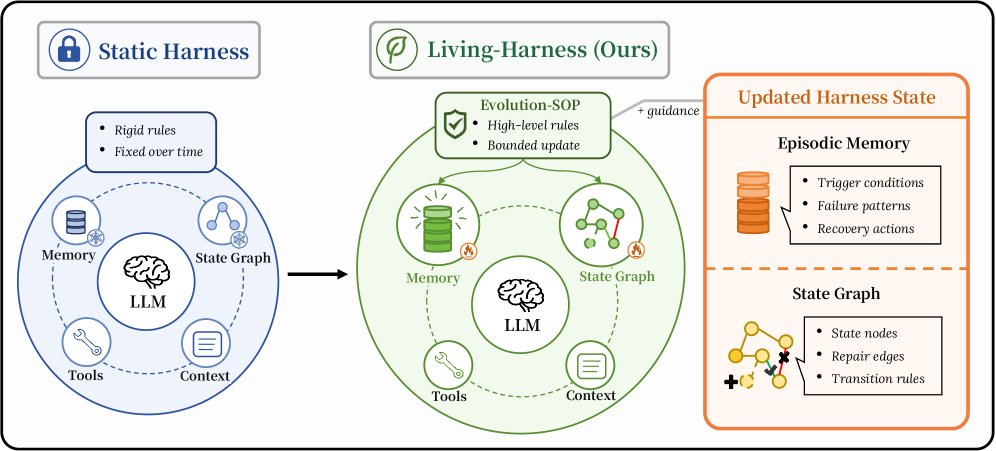
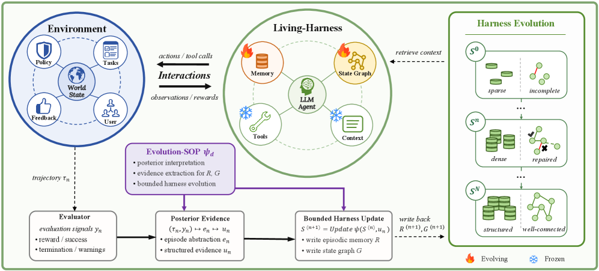

Living-Harness: Post-Episode Harness Evolution via Episodic Memory + State Graphs
TL;DR
- "Living-Harness Is an Interactive-Agent Evolver" (arXiv 2607.26598; Yuetian Du, Yucheng Wang, He Xu, Jiexu Xu, Shanwen Tan, Bing Zhao, Boyu Yang, Zhijie Xu, Ming Kong, Hu Wei, Jie Liu, Qiang Zhu) makes the harness the object of self-improvement: after each evaluated episode a fixed domain-level Evolution-SOP converts trajectory + evaluator signals into posterior evidence and commits bounded updates to two persistent stores — episodic memory (trigger conditions, failure patterns, recovery actions) and a state graph (state nodes, repair edges, transition rules) — while tools, base context, and weights stay frozen.
- With GPT-5.2-medium as the actor it reaches 83.09 average Pass@1 on τ²-Bench (+10.07pp over Reflexion, above Gemini 3 Pro's 82.92) and 65.50 on MultiWOZ-2.4 (+9.91pp over ReasoningBank). The evolved state transfers retrieval-only: frozen, it improves every reported domain for Gemini 3 Pro, GLM-5, Qwen3-max, and Kimi-k2 — MultiWOZ Taxi goes 0.00 → 43–45.
- The distinctive engineering is commit discipline: candidate repairs must pass schema, scope, evidence, constraint, and merge gates before touching persistent state, and an episode's evidence is never available when that episode is scored. Ablating the Evolution-SOP (keeping both containers) costs 9.7 points — the win is structured bounded evolution, not bolted-on memory.
Why this matters
The recurring disease of interactive agents is that they recover without learning: Reflexion-style retries fix the current instance, the correction evaporates with the episode, and the same tool-call omission reappears next week. The paper's case study is the perfect specimen — the agent repeatedly concludes "this user should be transferred to a human" and repeatedly fails to call transfer_to_human_agents(), because a textual lesson is not an executable repair.
Living-Harness is the most disciplined version of that argument so far. It draws the update boundary tightly — only the harness state evolves; tools, base context, domain rules, and the Evolution-SOP itself are frozen — and splits procedural knowledge into two representations: memory for why/when a repair applies, a graph for where it changes the workflow. That the resulting state is model-agnostic (frozen, it lifts four other backbones purely via retrieval, including a stronger one) is the headline evidence that harness-level learning is real capital, not prompt-tuning residue: a concrete existence proof that post-deployment procedural repair accumulates without touching weights.
The paper's Table 6 scores related systems on four axes: what object is updated, whether it persists, whether the external procedure is revised, and whether commits are bounded by explicit gates. ReAct keeps nothing; Reflexion keeps verbal memories without revising procedure; AWM revises workflows "partially"; ReasoningBank persists reasoning strategies; EvoTest rewrites agent configurations; Meta-Harness rewrites harness code. By the authors' accounting, none of those rows has bounded gates. That fourth column is the actual claim to novelty, and the ablations defend it.
The core idea
Separate fixed execution resources from an evolving procedural state. In domain \(d\) at episode \(n\), the harness is
where \(C_{d}^{\mathrm{act}}\) is the frozen actor context (tools, base context, domain rules), \(\psi_{d}\) the frozen domain-level Evolution-SOP, and \(S_{d}^{(n)}\) the evolving state: episodic memory \(\mathcal{R}\) plus state graph \(G\). Initialization is empty memory and a coarse scaffold, \(S_{d}^{(0)}=(\emptyset, G_{d,\mathrm{scaf}})\), supplying only domain roots and task-family structure — all fine-grained repairs are induced from evaluated experience.

Figure 1 from the paper: a static harness is fixed after deployment; Living-Harness evolves exactly two components — episodic memory (trigger conditions, failure patterns, recovery actions) and the state graph (state nodes, repair edges, transition rules) — under Evolution-SOP guidance.After an episode terminates and an evaluator emits signals \(y_n\), the Evolution-SOP runs a posterior–extract–commit pipeline: an episode abstraction isolates the reusable procedural content (objective, verified facts, outcome, critical failure/recovery point), then splits it into evidence for each store:
where \(x_n\) is the task, \(\tau_n\) the completed trajectory, \(u_n^{\mathcal{R}}\) the memory evidence (trigger/failure/recovery) and \(u_n^{G}\) the graph evidence (states, actions, transitions). Extracted evidence is only a candidate repair — it must survive gating before it becomes persistent state.
The framing contribution is a program-state POMDP view: augment the environment state with an episode-level program state \(z^{(n)}\) induced by \(S^{(n)}\), constant within an episode, changed only by post-episode updates. Proposition 1 shows retrieved procedural context provably tightens the Bayes error bound on execution-relevant latents:
where \(\mathcal{I}_{s}=\sigma(h_t)\) is the interaction-history information set, \(\mathcal{I}_{s,z}\) additionally conditions on the program state, \(\xi\) is an execution-relevant latent, and \(\mathcal{B}(\mathcal{I})=\mathbb{E}[\operatorname{Var}(\xi\mid\mathcal{I})]\) is the Bayes error bound. An approximate version adds an extraction-error term \(\epsilon_z\): the harness helps iff information gain exceeds the noise of extracting and using it — exactly what the commit gates are for.
How it works

Figure 2 from the paper: the rollout–evaluate–update loop. Memory and state graph evolve (flame icons); tools and context are frozen (snowflake icons). Over cycles the state goes from sparse/incomplete to structured/well-connected.Each episode runs retrieve → act → evaluate → update. Retrieval builds a task-conditioned query \(q_n = Q(x_n, f_n)\), pulls top-\(k{=}3\) from each store (same-family-first, cross-family only when same-family evidence is insufficient, ranked by semantic relevance, family compatibility, accumulated confidence), and renders them as actor-facing context:
with fixed rules in \(C_d^{\mathrm{act}}\) always taking precedence over retrieved content. The state is frozen for the whole rollout; accepted evidence lands only in \(S^{(n+1)}=\operatorname{Update}_{\psi_{d}}\left(S^{(n)},u_{n};C_{d}^{\mathrm{act}}\right)\).
Loop over episodes n = 0, 1, 2, ... in domain d:
1 q_n ← Q(x_n, f_n) # task-conditioned query, family scope f_n
2 κ_n ← Render(top-3 from R^(n), top-3 from G^(n)) # same-family-first retrieval
3 τ_n ← rollout under frozen tools/context C_d + κ_n
(task-local reflexion ≤ 3 trials allowed; its buffer is NEVER written to R or G)
4 y_n ← Evaluator(x_n, τ_n) # score BEFORE any update (no same-episode reuse)
5 e_n ← Post(x_n, τ_n, y_n, C_d) # episode abstraction via Evolution-SOP ψ_d
6 (u_R, u_G) ← Extract_ψd(e_n) # candidate repair, schema-constrained JSON
7 gate the candidate:
schema gate — valid memory/graph schema (one repair pass, then discard)
scope gate — committed to its task family unless transfer is supported
evidence gate — grounded in evaluator feedback / trajectory / repeated failure
constraint gate — must not override frozen policies or tool preconditions
merge gate — near-duplicates merged via semantic hash + confidence, not inserted
8 if accepted: R^(n+1), G^(n+1) ← write/strengthen entries and repair edges
else: S^(n+1) ← S^(n)
What a commit actually looks like. The extractor prompts (Appendix E) are the real specification of "procedural repair," since they define the JSON that survives gating. The τ²-Bench memory extractor turns one posterior into 0–3 items with seven fields each: title (short, action-oriented), applicability (when to retrieve it), failure_class (the prompt names lookup_failure, missing_precondition, wrong_branch, eligibility_gap, workflow_gap), missing_step, recovery_action, family, and source_type ∈ {failure, failure_informed_success} — the second reserved for successful episodes only informative because an earlier failed branch or reflexion signal exposed the lesson. Items must be atomic and reusable within their family; unjustified evidence must return "memory_items": []. The workflow extractor recovers at most one fragment: family, precondition, a state_sequence of 3–8 abstract labels (its own examples: resolve_identity, validate_preconditions, prepare_action, execute_task_action, confirm_outcome), critical_checks, a commit_gate — "the last condition that must be true before the irreversible step" — postcondition, tool_hints, status ∈ {candidate, stable}, and repair_origin: true when the fragment came from a corrected path. Insufficient evidence returns {"workflow": null}.
The Telecom case study (Figure 4) instantiates both from one failure. A user reports "Phone shows No Service"; the hidden issue is a contract-end suspension. Reflexion-only burns 3 attempts for reward 0, escalating its own hints ("call transfer tool" → "do not only announce transfer" → "execute formal transfer action") and never firing the tool. Under an Evolution-SOP reading "Extract executable missing repair, not vague advice," the trajectory becomes a memory entry (execute the transfer tool for terminal-suspension cases; missing step: transfer_to_human_agents not executed; repair: call it once suspension is confirmed) and a repair edge confirm_terminal_suspension → transfer_to_human_agents(), guarded by "only if contract-end suspension is confirmed." Cycle 1: retrieve account, confirm suspension, fire the tool — 1 attempt, reward 1. The edge gate stops that repair from escalating every telecom complaint.
The five gates, and what each throws away. Schema rejects malformed extractor output — one repair pass, then discard, so a garbled commit never lands. Scope rejects over-generalization: updates commit to their own task family unless cross-family transfer is explicitly supported, keeping a Retail refund lesson out of Airline retrieval. Evidence rejects unsupported self-critique: a candidate must be grounded in evaluator feedback, trajectory evidence, or a repeated failure pattern — the gate that separates this from Reflexion's free-form verbal memory. Constraint rejects repairs that would override frozen domain policies, tool preconditions, or execution constraints in \(C_d\): the harness may add procedure, never relax policy. Merge rejects duplicates — similar updates fold into existing entries via semantic hashes and accumulated confidence, which is why the graph mostly strengthens existing edges. Stated ceiling: the gates reduce the chance that noisy or misattributed evaluator signals become persistent state, but "they do not provide full rollback or regression testing."
Score before update: the train/test firewall. The actor rolls out using only the state available before that episode, \(S^{(n)}\), plus frozen \(C_d\); the evaluator computes the score; only then do the posterior generator and the two extractors touch the trajectory. Evidence generated by an episode is never available when computing that episode's reported score. On τ²-Bench the state updates after each scored episode; on MultiWOZ-2.4 updates synchronize every four — the whole window is rolled out and scored first, evidence commits afterwards. This is what makes the headline numbers a claim about learning rather than about fitting the evaluation stream: a system that commits before scoring is effectively reading the answer key. The other half of the firewall is quarantine — task-local reflexion (up to 3 trials, matching Reflexion's budget) may guide retries inside an instance, but its buffer is discarded, never written to \(\mathcal{R}\) or \(G\). The Evolution-SOPs are run-frozen per-domain documents, 8 in the appendix; the posterior–extract–commit machinery is shared across domains.
Results
On τ²-Bench with GPT-5.2-medium, Living-Harness averages 83.09 Pass@1 vs. 73.02 for Reflexion (best interactive baseline; +10.07pp) and 82.92 for Gemini 3 Pro, the best flagship. Per-domain: 85.96 Retail, 88.00 Airline, 78.07 Telecom. On MultiWOZ-2.4 it averages 65.50 vs. 55.59 for ReasoningBank (+9.91pp) and 53.10 for Reflexion; slightly below Reflexion on 1-domain tasks (76.55 vs 77.88) but best on the 2- and 3-domain groups (70.52 and 25.87) — repairs pay off most when procedures compose across domains. AWM (51.08 / 42.80) and EvoTest (50.62 / 37.80) trail badly, both landing below the un-augmented GPT-5.2 backbone on τ²-Bench.
Evolution dynamics (Table 2): Retail climbs 57.02 → 85.96 and Telecom 57.39 → 78.07 over three cycles; MultiWOZ final-cycle gains are +13.96 Restaurant, +24.11 Hotel, +22.83 Train, +25.25 Attraction, +28.71 Taxi. Biggest jumps after cycle 1, refinements later — "repair missing workflow steps first, then polish" — though Airline peaks at 88.00 in cycle 2 and slips to 86.00, one of the "occasional mild fluctuations" the authors acknowledge. State growth is roughly linear (Retail: 198 memory entries, 714 nodes / 1,368 edges after cycle 3; Airline adds exactly +200 edges per cycle).
Ablations (Figure 3), with the definitions that make them readable. w/o Evolution-SOP keeps both containers but swaps the domain update procedure for a generic extractor, disabling domain-specific commit gates and family-scoped update rules — the τ²-Bench average falls 83.09 → 73.38, a 9.71-point drop and by far the largest. w/o Memory disables memory retrieval and updates: 77.34 (−5.75). w/o State Graph disables graph retrieval and updates: 79.50 (−3.59). So the stores are complementary, and the graph is the cheaper to lose. More pointedly: 73.38 is within 0.4 points of Reflexion's 73.02 — strip the posterior interpretation and the gates, and a memory-plus-graph harness lands where task-local reflection already was. The full system is best in every domain, so no one domain carries the average.
Retrieval-only cross-model transfer (Table 3) is the most consequential result. The GPT-5.2-evolved MultiWOZ state is frozen and handed to four other backbones, retrieval only, no further global updates. Every reported domain improves for every model. Gemini 3 Pro — the strongest flagship in Table 1 — goes 47.83 → 66.13 Restaurant, 45.18 → 63.71 Hotel, 55.35 → 66.87 Train, 63.64 → 66.67 Attraction, 30.26 → 68.72 Taxi. GLM-5 goes 24.94 → 39.36, 16.50 → 38.83, 18.18 → 38.38, 27.27 → 38.13, 0.00 → 43.08; Qwen3-max and Kimi-k2 show the same shape, both taking Taxi from 0.00 to 45.13. The three 0.00 → 43–45 jumps are the striking part: a domain three backbones fail completely becomes solvable at roughly the same rate for all three once the procedure is supplied, which reads as the harness state rather than the model setting the ceiling there (inferred from the pattern — the paper doesn't decompose it). Portability implication: what was learned is not a GPT-5.2-specific prompt idiom but a procedure any competent actor can execute — evolve it once on your strongest model, ship it to your cheapest.
How it connects
- Recursive Harness Self-Improvement — the maximalist version: the harness edits itself, including the machinery that edits. Living-Harness stops short — the Evolution-SOP is frozen, so the improver never becomes the improved.
- EvoHarness-RL — trains harness usage into the weights; Living-Harness is the complementary weights-frozen path where all learning lives in retrievable state.
- Harness Handbook — argues for readable/editable harnesses; the schema-constrained JSON memories and explicit repair edges here are what "editable" looks like when the editor is an evaluated pipeline rather than a human.
- MSCE: Memory into Executable Skills — same diagnosis (textual lessons don't execute), different artifact: MSCE compiles memory into skills, Living-Harness into state-conditioned repair edges.
- Agentic Context Management — the retrieval-and-render step (top-3, same-family-first, fixed rules take precedence) is a concrete context-management policy for procedural knowledge.
- Meta-Harness — a row in this paper's own comparison table and the natural contrast: it rewrites harness code with unbounded edits and full-trace evidence; Living-Harness rewrites harness state with bounded, gated commits. Same object, opposite risk posture.
- It also reads as a working instance of scaffold-level (L2) evolution with evidence-gated commits in the sense of the Reliable Self-Evolving Agents survey — including honest compliance with "score before update."
Critical take
The commit gates reduce noise ingestion but there is no rollback or regression testing (the authors say so): a plausible-but-wrong repair that passes the evidence gate persists and gets retrieved forever, and nothing re-audits old entries when policy changes. The status: candidate field shows the authors thought about provisional commits, yet nothing in the pipeline ever demotes or expires an entry — promotion is one-way, and fluctuations like Airline's −2.00 in cycle 3 hint this is not hypothetical. Second, the Evolution-SOPs are hand-written per domain — eight bespoke documents, a real authoring cost and a hidden prior; the ablation shows this is where much of the gain lives, so "self-evolving" does less work than "well-specified evolution protocol," and the paper explicitly declines to claim zero-shot SOP transfer. Third, the state grows linearly without pruning (+456 edges/cycle in Retail; 951 memory entries in MultiWOZ Restaurant), which top-3 retrieval masks at this scale but won't at 100 cycles — retrieval quality, not storage, breaks first. Fourth, score-before-update is good hygiene, but the authors note what it does not establish: robustness to shuffled stream orders, reduced recurrence, held-out families, or policy perturbations. Finally, everything depends on post-episode evaluator signals — benchmarks provide them; most deployments don't.
If you remember three things
- Bounded target: only \(S=(\mathcal{R},G)\) evolves — trigger/failure/recovery memories plus state-graph repair edges — under a frozen Evolution-SOP, frozen tools/context, frozen weights; candidates pass schema/scope/evidence/constraint/merge gates, and episodes are scored before their evidence can commit.
- It beats the strongest interactive baselines by ~10pp Pass@1 on τ²-Bench (83.09) and MultiWOZ-2.4 (65.50); the SOP ablation (83.09 → 73.38, essentially Reflexion's 73.02) shows structured bounded evolution — not memory per se — is the active ingredient.
- The evolved state is portable capital: frozen and reused retrieval-only, it improves four other backbones on every reported domain, taking three separate 0.00 scores to ~45 and Gemini 3 Pro's Taxi from 30.26 to 68.72.